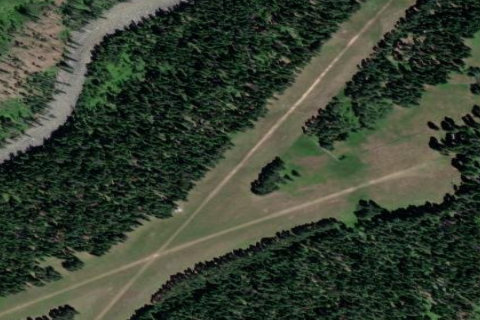

MOOSE CREEK /USFS/
1U1 · ID

Aerial imagery source: Esri, Vantor, Earthstar Geographics, and the GIS User Community
| Identifier | 1U1 |
|---|---|
| State | ID |
| Runway length | 4,100 ft |
| Runway width | 250 ft |
| Surface | TURF |
| Runway | 01/19 |
| Elevation | 2,454 ft |
| Ownership | public |
| CTAF | 122.9 |
| Coordinates | 46.12631944, -114.92170277 |
Notes
[idaho_itd] USFS Airfield [shortfield] Location Overvie Moose Creek USFS Airport (identifier 1U1) sits at 2,454 feet elevation near the confluence of Moose Creek and the Selway River, deep within the Selway-Bitterroot Wilderness. The strip is bordered by the Selway River to the south and Moose Creek to the north, and offers roughly ten campsites with fire pits, tables, and pit toilets, with water available at the historic Forest Service Ranger Station. Trails radiate in every direction for hikers, the fishing can be exceptional, and the star gazing — far from any light pollution — is legendary among those who have spent a night there. Operations & Warnings The airstrip has two runways: the primary at 4,100 feet (01/19) and a shorter 2,300-foot strip (04/22). Runway 01/19 tends to get muddy in spring and winter, so pilots are advised to use 04/22 during those seasons for its better drainage and firmer surface. Big game animals are regularly found on and around the airport, and temporary closures do occur. Normal procedure is to land Runway 19 and depart Runway 01; a go-around on the 04/22 configuration is not recommended. The Great Falls sectional chart lists the strip as hazardous, largely due to a DC-3 that overran Runway 04 decades ago and came to rest 100 feet into the trees, killing several firefighters. A monument near the Ranger Station honors their memory. That said, pilots who are proficient in slow flight and tight canyon turns will find the approaches manageable. History The Forest Service first cleared the trees for an original 2,300-foot turf runway in 1931, with a longer 4,100-foot runway added 27 years later. The historic log buildings of the Ranger Station, dating to the 1920s, still stand at the end of that original strip and remain in use today. The airstrip has weathered its share of hardship over the decades — a major wildfire known as the Moose Creek Complex Fire burned more than 14,000 acres in the area, blackening timber along the runway edges and damaging several Ranger Station buildings. More recently, near-100 mph winds struck the airfield in July 2024, snapping mature pines and crushing two buildings at the historic Ranger Station, burying the campground in waist-deep debris — a reminder that nature remains very much in charge out here. Through it all, a dedicated network of volunteers, the Recreational Aviation Foundation, the U.S. Forest Service, and passionate pilot-caretakers have worked to preserve and restore this irreplaceable wilderness gem.